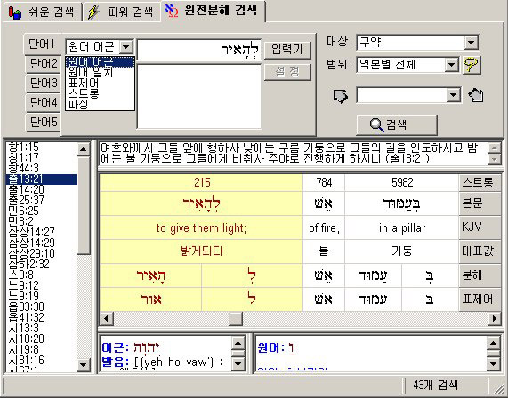

|
|
파싱과
원어 입력기까지 지원하는 원전분해
전문 검색기 (스칼라 에디션)
-
원전분해/문법분해에
관하여 상상할 수 있는 모든 검색이 가능한,
토베스트가 자신있게 내어놓는 최고의 원전분해
전문 검색기입니다.
-
원어
어근, 원어 일치, 표제어, 스트롱 코드, 파싱 등
모든 분야에 대해 개별 및 복합 검색이
가능합니다.
-
단어
다섯개까지 복합 검색이 가능하며, 각각의 단어를
그리고(AND), 또는(OR) 연산자를 통해 연결할 수
있습니다. 또한 각각에 대해 다른 분야(원어 일치,
스트롱 코드, 파싱 등)를 지정하여 검색할 수
있습니다.
-
검색
대상과 범위를 구약, 모세오경, 대선지서,
사복음서, 마태복음, 요한일서 등, 마음대로
지정할 수 있습니다.
-
검색
결과가 원전분해 포맷 그대로 나타나므로, 따로
성경본문창을 찾을 필요 없이 여기서 모든 정보를
볼 수 있습니다. 또한 검색창
하단에는 영한대역 스트롱 사전과 파싱 창이 함께
나타나므로, 언제든지 해당 단어의 정보를 열람할
수 있습니다.
-
좌측에
나타난 검색 결과의 성구목록에서 원하는 것을
클릭하면 해당 구절의 개역한글 역본과 함께
원전분해 데이터가 나타납니다.
-
검색한
단어에 해당되는 부분이 자동으로 알아보기
쉽게 색깔이 변경되면서, 화면상에 보이도록
위치가 자동 조정됩니다.
-
깔끔한
인터페이스의 히브리어 / 헬라어 전용 입력기가
지원되므로, 키보드 모양으로 화면에 나타난
입력기 창을 띄워 놓고, 보이는 위치에 따라
키보드를 치기만 하면, 자판 배열을 모르는
사람이라도 쉽게 히브리어/ 헬라어를 입력할 수
있습니다. 물론 언어에 따라 좌/우측 정렬은
자동으로 변경됩니다.
-
단계별로
파싱을 지정, 검색할 수 있도록 설계된 파싱
도우미를 통해, 초보자라도 쉽고 편리하면서도
완벽하게 파싱 지정 검색을 하실 수 있습니다.

이전 화면
|
Copyright © TOBEST All rights reserved. Since 1998
Email: webmaster@visualbible.co.kr